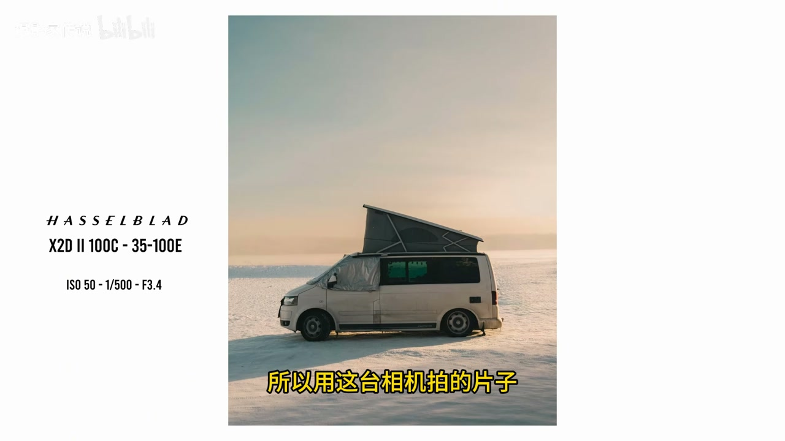
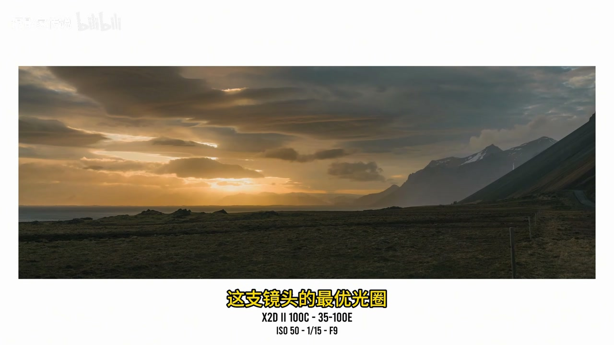
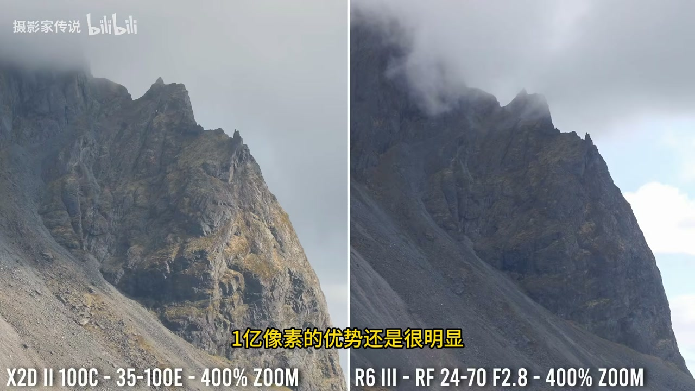
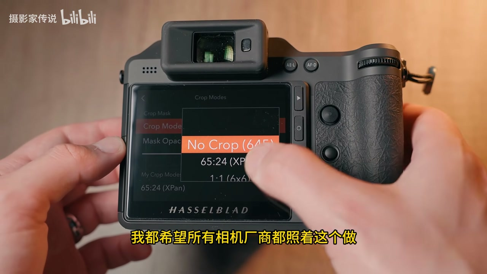
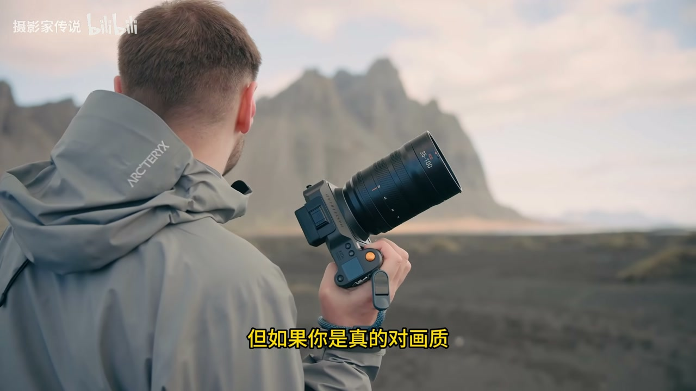

内容要点
UP 实打实用哈苏 X2D 100C 约两个月：值高定价的是动态范围/16bit RAW、自然色彩（后期极少）、1亿像素细节与十挡防抖、握持/OLED/菜单/1TB内置与软件体验；不值点在于对焦与连拍相对顶级全画幅偏慢、连机拍摄关连续对焦、几乎无可用视频。结论：多数人可能不值，极致静物/人像/风光画质党能懂贵的道理。对比样片对佳能 R5 II、R6 III。
知识结构
中画幅+1亿像素 RAW 宽容度；欠曝肤色可救；机内 HDR+OLED 回看。
自然色彩校准；人像少偏色；风光裁切/防抖/XPan；影棚细节怪兽。
握持、屏幕、菜单、1TB、耐高寒雨淋、手机/电脑原厂软件接近 LR。
AF/连拍非体育机；无视频；多数人不值，极致画质党可值。
X2D 是把钱砸在「拍照纯度」上的机器：画质与仪式感换对焦速度与视频能力；选购先问自己拍不拍动态与视频。
00:00-03:00贵得有理：动态范围与 RAW 容错
开场承诺讲真话：哪些配得上高定价、哪些不值，并与顶配全画幅对比。第一次用数码中画幅，最直观的「贵有道理」是动态范围——1亿像素+中画幅传感器，RAW 宽容度高，拉阴影压高光幅度夸张，机内可拍真正 HDR，OLED 回看成片。
阴影干净，大幅后期色彩不易垮；对比全画幅拉多易发灰，欠曝人物肤色易崩。海边日落城市暗线+深阴影人物等场景更能体现；16bit 色深让信息更足。极光冰屋亮窗等高光场景也轻松压回细节。
03:00-06:30色彩科学、一亿像素与影棚细节
最爱点之一是色彩：人像肤色自然、少怪偏色与红色过饱和（全画幅痛点）；贴近肉眼所见，后期量极小——不是浓重直出预设，而是自然色彩方案（传感器出厂单独校准）。与佳能 R5 II、R6 III 海边人像对比留给观众判断。
一亿像素带来风光裁切重构图灵活性；十挡机身防抖手持约 1 秒曝光可行；XPan 宽幅裁切有趣。意外强项是影棚：皮肤/眼睛/布料/头发细节干净，35-100 镜头+传感器成「画质怪兽」。灯塔等与 R5 II 放大对比细节差明显。



06:30-12:20使用体验加分，以及配不上价的妥协
握持（加大镜头仍舒服）、质感做工、OLED 回放、菜单直观、1TB 内置高速、耐零下与雨淋；配套手机对焦 App 与桌面软件接近 Lightroom 体验，想要正宗哈苏色建议走原厂软件。
妥协：AF 准且稳，婚礼/人像够用，但不及同价顶级全画幅速度与最新 AI，连拍约 3fps，不适合体育；电脑连机拍摄会关连续对焦；几乎无可用视频——对视频用户可直接排除，作者反而欣赏其「只做拍照」。结论：多数人可能不值（全画幅已过剩）；极致动态范围/色彩/细节与仪式感追求者能懂贵因；爱好者不必盲目冲。


完整转录（128段）
以下文本由 Whisper medium 模型自动转录，可能存在少量识别误差，已尽可能修正。
敢卖5万多的哈苏X2D100C到底评查这么贵
我十打十连用了俩月 今天全给你们说真话
用下来有的表现确实惊艳到我 但有的地方就真的一言难尽
今天我就给你们好好唠唠 这台相机到底哪一点做得足够好 配得上它的高定价 哪一点又完全不值这个价
我也不会空口白牙给你们瞎吹 后面我会拿它和我能凑到的最顶配的全画幅相机直接做对比
你们看完自己就能判断这台哈苏X2D到底值不值 这是我第一次用数码中画幅相机 用下来第一个让我觉得哦 原来贵是有道理的点
就是它的动态范围 X2D的动态范围表现真的让我印象深刻
我觉得这应该是1亿像素的分辨率 再加中画幅传感器共同带来的优势
它的RAW文件宽容度特别高 后期能拉的阴影 能压的高光幅度大到离谱
几乎什么细节都能救回来 还能直接在机内拍摄真正的HDR照片 完整覆盖从拍摄到回看的全流程
你甚至能直接在机身背面那块超棒的OLED屏幕上看成品
用它拍出来的HDR照片效果真的特别好 这台相机拍出来的阴影干净的离谱
更重要的是 就算你大幅度后期拉文件 色彩也不会垮掉
哪怕是最好的全画幅相机 后期拉多了 画面很快就会发灰发闷 尤其是阴影里有欠暴的人物时
肤色很容易就变得没法看 比如我之前在海滨城市拍的这张照片 当时是明亮的日落时分 城市天气线很暗
主体人物还处在深阴影里 这种场景本来就很难控制曝光 后期拉阴影的时候 人物肤色特别容易出问题
但这台相机的后期空间大到夸张 哪怕人物严重欠暴 肤色还是很有生气 色彩也特别正
这部分优势有一部分来自于他的16位色深RAW文件
本身记录的信息就更多 这点在RAW文件里体现的特别明显 我当时看完这组片子 第一次真切觉得
这相机卖这么贵确实有道理 这也是第一批让我特别惊艳的样片 还有我之前在某地给客户拍项目时
在极光冰屋里拍的这张照片
换作我之前的全画幅相机 我肯定会担心高光过曝
但用这台哈苏完全不用操心 轻轻松松就能把亮窗外的所有细节都拉回来 我用的越久越发现
他的RAW文件容错率特别高 不管是拍疯狂还是拍站在亮窗前的主体
或是拍逆光这类主体欠暴的场景 表现都特别稳 还有我之前拍的这组照片也特别能体现他的动态范围优势
尤其是拱门前面拍模特的那一张 还有我在景区对着出生的太阳直接拍的照片
后期照样能把所有细节都拉回来 对我来说 他的表现确实比我的全画幅相机高了一个档次
这也是他定价高的合理之处之一 如果要我说哈苏系统我最喜欢的点 说实话特别好选 绝对是他的色彩科学
这点我之前还挺意外的 因为我之前没用过哈苏
不知道他的色彩表现到底怎么样 但用下来发现
拍人像拍人物的时候 色彩表现真的绝了
我平时主用的是加农系统 我本来就特别喜欢加能的色彩科学 尤其是拍人像的肤色表现
但哈苏拍出来的肤色特别自然 完全没有奇怪的色偏 也不会出现红色过饱和的问题
这可是我用全画幅相机一直头疼的点
哈苏拍出来的画面就是看着很舒服 所以用这台相机拍的片子需要的后期调整特别少
我从来没有用哪台相机的时候 后期工作量这么小
这不是因为他直出有浓重的预设 对比度拉得很高 完全不是
而是他拍出来的画面就特别贴近我当时肉眼看到的真实场景
这其中一部分原因应该是哈苏的自然色彩解决方案
每一块传感器出厂前都单独做了色彩校准 本来我以为这就是营销画术 但用下来真的能感觉到差别
这可能是我用过的最贴近人眼真实所见的相机了
如果你是对色彩特别挑剔的摄影师 这一点就足以让你觉得他值这个价值 接下来我会用x2d和我的佳能r5二代分别拍人像
给你们看看两个系统的色彩科学差异 尤其是拍人像的区别
我让模特坐在海边的长草里 分别用两台相机拍了样片
后面也会放更多两台相机的对比样片 还有和佳能r63代的对比
毕竟r63代的色彩表现在rf卡口系统里也算数一数二的
你们可以直观对比 也可以在评论区说说你们更喜欢哪台的表现 帕苏还有个明显的优势就是拍疯狂
一亿像素的传感器能捕捉到的细节夸张到离谱
我本来不是什么风光摄影师 但用这台相机拍风光的时候真的特别享受
他的文件带来的灵活性和清晰度真的太强了 这也给后期带来了极大的灵活性
你可以拍的时候稍微取广一点 后期再重新构图 就算裁切幅度很大 文件画质还是保持的特别好
就连机身防抖都特别好用 我本来不怎么拍长曝光 但用哈苏的时候就愿意拍
你可以把光圈收小到35-100这只镜头的最优光圈 保证最大锐度
十挡机身防抖真的很强 手持拍一秒的曝光我现在基本都能拍清楚 这是我之前用佳能相机做不到的
我还特别喜欢他的XPan宽幅裁切模式 用起来特别有意思
本身有一亿像素打底 用创意裁切模式也不会觉得分辨率不够用 完全没有束缚感 但让我意外的是
他在影棚里也特别好用 拍人像的时候受控光线下的细节表现真的太牛了
影棚里拍的话 皮肤 眼睛 布料 头发的细节都干净的不行 是我之前从来没见过的水准
当然 这也有一部分是镜头的功劳 这只35-100镜头素质特别顶
配上这个传感器 整个系统就是个画质怪兽 现在是我最喜欢用的影棚拍摄套装
与其我空说一亿像素有多强 不如直接给你们看对比 为了让你们看到细节差异 我拿x2d和佳能r52代拍了同一张灯塔的疯狂照
看看两者的差距到底有多大 我把照片放大到400% 你看哈苏拍的灯塔细节明显更多
可能在屏幕上看着不明显 但实际看原文件的话 细节真的特别干净
毕竟r52代本身已经是风光拍摄的神机了 我还拍了和r63代的对比样片
当时我构图没对齐 还反而更利于r6的表现 但就算这样 一亿像素的优势还是很明显
如果你们是风光摄影师 可以说说看 这样的画质提升值不值得你多花这么多钱 看到这你们可能会说
画质好是好 但卖这么贵 使用体验总得好吧
说实话 使用体验确实不错 我主用佳能 本来对人机工学要求特别高 这也是我当初选佳能的主要原因之一
但x2d的握持感真的惊到我了 就算装上35-100这种大镜头 握着手也特别舒服
整机质感特别好 扎实的不行 做工也特别精致 完全是这个价位该有的水准 有些相机纸面参数贵
但拿在手里用的时候完全感觉不到 但这台哈苏拿在手里用的时候
你真的能感觉到它的高端感 这台相机我最喜欢的点之一绝对是这块屏幕
我给那么多模特看过相机背面的照片 没有一个不夸这块屏幕效果好的
它不仅尺寸大 亮度高 对比度高 色彩还特别准 用它拍照的时候看回放真的特别有成就感
给别人看成片的时候也特别有面 它的菜单系统也特别棒 简单直观 操作起来特别顺畅
我本来就很喜欢加农的菜单逻辑 对菜单操作的便利性要求很高
哈苏的菜单做的真的特别好用 我还特别喜欢它内置的1TB存储空间
我都希望所有相机厂商都照着这个做 传输速度还特别快
再也不用担心出门忘带内存卡了 这台相机不仅好看 还特别耐用
我之前带着它在零下25度的环境里拍了好几个小时极光
还在景区淋过雨 全程都没出过任何问题 它确实比我的r25二代大一点 但也没有大太多
就算装着35-100这种大镜头带出门旅行也完全没问题 我带着它去过好几个地方 它一整天也不会觉得累赘
还有一点我本来没打算提 但用下来真的不得不说 就是它的配套软件
大部分相机厂商的配套软件都做得特别差 手机APP又卡又难用
电脑端的RAW处理软件也做得像老古董 基本没人用 我平时对比不同相机系统的时候 不得不经常用这些原厂软件
但哈苏的软件真的做得特别好
手机端的对焦APP好用 流畅 稳定 操作也简单 我之前用别的相机的APP就连用个遥控快门都经常掉链子
哈苏的就从来没出过问题 电脑端的对焦桌面软件是我用过的相机厂家里最接近Lightroom提案的
完全不是那种没人管的边角料软件 做得很精致 运行也流畅
想要体验最正宗的哈苏色彩 用这个软件准没错 用了一段时间之后 我确实能理解它为什么定价这么高
但这不代表它是完美的 接下来我就说了它哪些地方配不上这个价
虽然我确实很喜欢用这台相机
但这种中化服相机就算卖的这么贵 还是有不少妥协的地方 第一个就是自动对焦
说句公道话 x2d的自动对焦其实真的不错 准度高也稳定 拍人像 活动 甚至婚礼都完全没问题
但你要是拿他和花个4万多就能买到的佳能 索尼顶级全化服相机比
对焦反应确实没那么快 也没有最新的ai对焦功能 不过说实话 这也是哈苏第一次做这么现代化的连续主体识别对焦
识别人 猫 狗 车辆都没问题 但拍快速的体育运动就不太够用了
这本来也不是这台相机的定位 现在x卡口甚至都没什么长焦镜头
可见哈苏本来也没打算让用户用它拍体育 拍野生动物 而且它的连拍速度也和同价位的全化服相机差远了
x2d连拍只有每秒三张 同价位的全化服能到每秒40张 还有一点我用的时候挺闹心的
我特别喜欢用它拍影棚 但只要你连上电脑连机拍摄
连续自动对焦就会自动关闭 影棚摄影师来说 这个限制挺奇怪的
我也不知道为什么会有这个问题 不过总的来说 拍人像甚至拍马这种活动的主体
它都完全够用 它还有激光雷达对焦 在这方面其实还有点优势
只是真的不适合拍特别快的动态主体
如果你平时拍体育或者快速动态场景比较多
那这台哈苏x2d对你来说可能就不值这个价 为大部分人来说 最大的妥协应该是视频功能
你花同样的钱 买任何一家主流品牌的顶级全化服相机 不仅拍照好 视频性能也特别强
但x2d基本上没有任何能用的视频功能
对有些用户来说 光这一点就可以直接排除这台相机了 不过有意思的是 我反而挺欣赏这点的
现在很多全化服相机都想着做全能机 什么功能都塞
但哈苏明显把所有精力都放在了拍照体验上
可能这也是为什么他的菜单这么干净 画质做得这么极致的原因
但说白了 他真的不是拍照视频两用的多功能相机
如果你平时拍视频很多 想要一台能兼顾拍照和视频的相机 那他绝对不适合你 这个定价对你来说也就不值了
那哈苏x2d100c到底值不值它的高定价呢
说实话 对大部分人来说 可能真的不值
这也很正常 现在的全化服相机已经做得特别好了
甚至我拿来做对比的r5二代 对大部分摄影师来说都已经性能过剩了
花更少的钱 你就能买到不错的画质 好用的对焦 视频功能 还有高速连拍
但如果你是真的对画质有极致追求的摄影师
特别在意动态范围 色彩 细节 还有纯粹的拍摄体验 那你肯定能懂他贵的道理
这是我为数不多用过的 拿在手里觉得特别有仪式感的相机 不只是贵 而是真的有特别的感觉
每次拿起来拍照我都特别有热情 玩摄影这么久 已经很少有器材能给我这种感觉了
你们也可以多看我放的对比样片 和你自己在用的相机比比
看看他这个价差到底值不值 懂得来说 这台哈苏更适合追求极致画质的专业摄影师
普通摄影爱好者真的没必要盲目冲 选相机适合自己的需求才是最划算的
感谢大家的观看 咱们下期再见